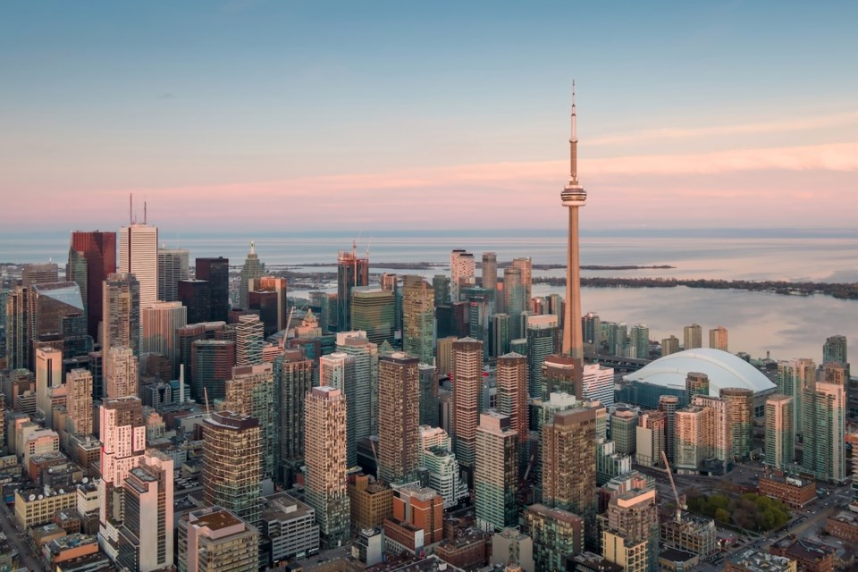
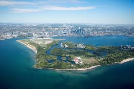
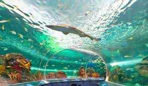
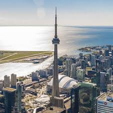

Toronto pulsa como a maior metrópole do Canadá e um dos centros urbanos mais multiculturais do planeta, onde arranha-céus espelhados de arquitetura futurista
convivem pacificamente com bairros históricos de tijolos vermelhos e uma vibrante cena artística, sendo que caminhar por suas ruas revela uma fusão de sotaques
de todos os cantos do mundo e uma gastronomia global rica, enquanto o dinamismo financeiro da Bay Street é constantemente equilibrado pela proximidade relaxante
do Lago Ontário e por uma rede de parques que trazem a natureza para o coração do asfalto, transformando a cidade em um ecossistema fascinante onde a inovação
constante, a segurança exemplar e a qualidade de vida se abraçam para definir a própria essência da identidade canadense moderna.

As Toronto Islands oferecem um refúgio natural idílico a poucos minutos de balsa do centro financeiro e funcionam como um cinturão verde sobre o Lago
Ontário, sendo que cruzar o canal revela uma perspectiva única dos arranha-céus que formam a silhueta da cidade, transformando a agitação urbana em
tranquilidade à medida que os visitantes exploram trilhas arborizadas e praias de areia fina, onde caminhar pelos caminhos sem carros evoca uma sensação de
paz nostálgica que contrasta com a modernidade canadense, enquanto os entusiastas de fotografia encontram nos mirantes o ângulo perfeito para registrar o
pôr do sol atrás da CN Tower, uma experiência relaxante que se estende por piqueniques e passeios de bicicleta que consolidam o arquipélago como o pulmão
verde e o escape favorito de Toronto.

O Ripleys Aquarium of Canada destaca-se como o complexo aquático, moderno e educativo mais famoso de Toronto, consolidando-se como um destino obrigatório e
verdadeiramente fascinante para viajantes do mundo inteiro. Ao chegar ao local, os visitantes são imediatamente impactados pela grandiosidade de sua estrutura
principal, que exibe um imponente teto geométrico e uma icônica torre vizinha, elementos que se tornaram cartões-postais do país. Cruzar esse portal moderno
revela uma atmosfera sagrada de encanto, respeito e descoberta, onde a belíssima engenharia secular se une perfeitamente a habitats tradicionais que
atravessam gerações. O complexo oferece uma imersão cultural completa e inesquecível, sendo o cenário perfeito para registrar fotografias espetaculares,
explorar o comércio de lembranças e vivenciar a essência da fauna canadense de forma mais autêntica, preservada e vibrante.

A CN Tower domina o céu de Toronto a 553 metros de altura e funciona como uma bússola urbana que corta as nuvens, sendo que subir em seu elevador
panorâmico leva apenas 58 segundos, transformando os arranha-céus em miniaturas e revelando a imensidão azul do Lago Ontário, onde testar os limites no
famoso piso de vidro causa um frio na barriga inevitável ao encarar o abismo sob os pés, enquanto os mais ousados desafiam a gravidade inclinando-se para fora
da estrutura no radical EdgeWalk, uma experiência extrema que termina quando a noite cai e o gigante de concreto se ilumina com cores vibrantes,
consolidando-se como a guardiã silenciosa e o símbolo máximo da identidade canadense.